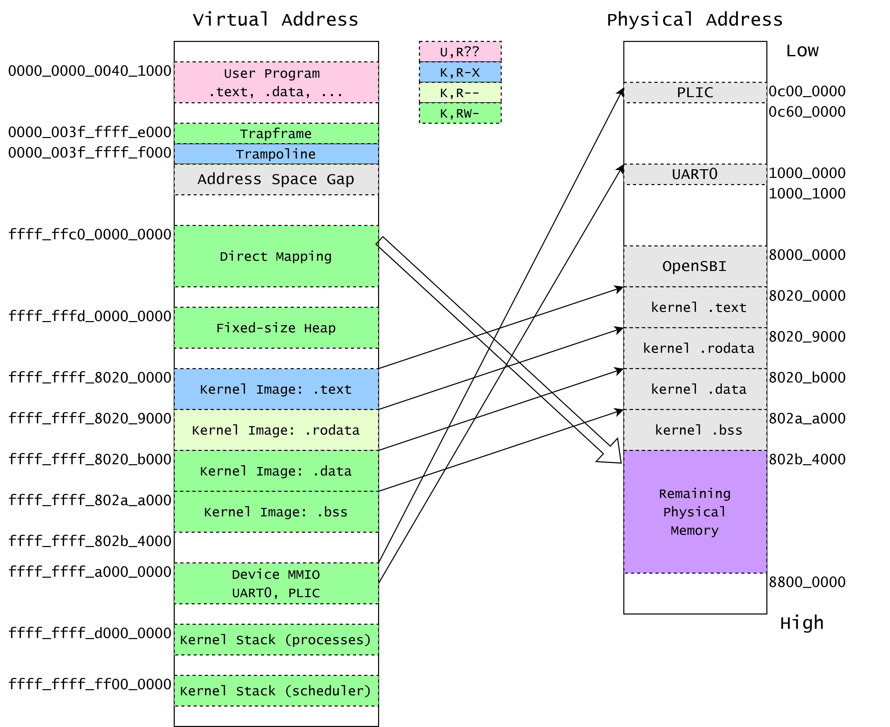

RISC-V 页表模型 & xv6 内核页表¶
实验目的¶
- 了解RISC-V页表模型SV39
- 掌握虚拟地址到物理地址的转换机制
- 掌握XV6如何管理内存并创建页表
Segmentation¶
从对内存访问保护而言，我们希望对内存的访问是带有权限保护的。这包括两个层面：
- 该内存地址是否可读、可写、可执行。
- 该内存地址是否允许低特权级访问。
也就是说，对于每个内存地址，我们都希望能检查它的操作权限是否符合原先的程序设计。
在 CPU 实现上，内存是以字节为单位来寻址的。如果要实现对每个字节的访问权限都能进行管理，这样的代价是难以现象的。 但是，我们可以让相同权限的代码、数据排布在一起，这样即可将整个程序的内存空间分为几个大块，每个块均有自己的起始地址(Base)和大小限制(Limit)，以及权限设置，这就是使用 Segmentation 进行内存保护的方式。
Segmentation 在内存空间的管理上有着诸多劣势，例如难以动态调节大小、存在碎片化的问题。所以，现代 CPU 和操作系统均使用页表（Paging）机制来实现内存管理。
Paging¶
分页机制，是将程序空间（虚拟地址）切割成相同大小的若干个页面，同时将物理内存也切割成同样大小的多个页面，从而可以在物理地址不连续的情况下，给进程分配足够的内存空间，并且从虚拟地址的角度看这个空间是连续的。
为什么需要虚拟地址空间？
如果我们只有物理内存空间，那么我们也可以写程序，但是所有的程序，包括内核，包括用户程序，都在同一个地址空间里，用户程序访问的 0x80200000 和内核访问的 0x80200000 是同一个地址。这样好不好？如果只有一个程序在运行，那也无所谓。但很多程序使用同一个内存空间，就会有问题：怎样防止程序之间互相干扰，甚至互相搞破坏？
比较粗暴的方式就是，我让用户程序访问的0x80200000和内核访问的0x80200000不是一个地址。但是我们只有一块内存，为了创造两个不同的地址空间，我们可以引入一个”翻译“机制：程序使用的地址（虚拟地址）需要经过一步”翻译“才能变成真正的内存的物理地址。这个”翻译“过程，我们用一个”词典“（页表）实现---给出翻译之前的地址，可以在词典里查找翻译后的地址。
每个程序都有唯一的一本”词典“，而它能使用的内存也就只有他的”词典“所包含的。
"词典"是否对能使用的每个字节都进行翻译？我们可以想象，存储每个字节翻译的结果至少需要一个字节，那么使用1MB的内存将至少需要构造1MB的”词典“，这效率太低了。观察到，一个程序使用内存的数量级通常远大于字节，至少以KB为单位（所以上古时代的人说的是"640K对每个人都够了"而不是"640B对每个人都够了"）。那么我们可以考虑，把连续的很多字节合在一起翻译，让他们翻译前后的数值之差相同，这就是"页"。
虚拟地址 => 物理地址¶
分页机制很重要的一点是如何建立和解析虚拟地址到物理地址的映射，下面我们从“如何从虚拟地址获得相应的物理地址”的角度进行介绍：
一级页表¶
如图所示是一个一级页表分页机制（一级对应于后面的多级，一级页表只需要查询一层页表即可得到物理地址）：

以上图为例，我们首先得到一个 虚拟地址（Virtual Address ，这个地址长度为6位，其中5~4位（高2位）为 页号（VPN，Virtual Page Number） ，3~0位（低4位）为 偏移量（Offset 。
通过虚拟地址，我们可以查询 页表 （ Page Table ），页表存在于 页表基地址（ PageTablePtr，Page Table Pointer ，是个物理地址）所指向的内存空间中，由连续存储的若干个 页表项（PTE，Page Table Entry） 构成。在一级页表中，每个页表项内容即为 物理页号（Page Frame #）+部分标志位 。尽管图中每个页表项看似包含 页号（Page #） 但是在实际的设计中， 页号并不写在页表项中 ，由于页表项是连续分布的，我们只需要知道页表项的大小（有多少位）以及虚拟地址页号（VPN，代表要查询第几个页表项），就可以通过 页表首地址+页号×页表项大小 得到对应的页表项地址，查询该地址对应内容即可得到物理页号。页表首地址是存储在架构指定的寄存器中的。
得到物理页号后，通过 物理页号×页面大小 即可得到所在页的物理地址（物理空间首地址为0x0）。一页可能很大，如何得到一页中具体某个字节的地址呢？通过偏移量， 页物理地址+偏移量 即可得到具体虚拟地址对应的具体物理地址。
一个例子
假设页面大小为 4KB ，如果想要定位到页面的每一个 Byte ，我们的偏移量则需能表示 4096 个不同的位置，因此对于 4KB 大小的页面来说，偏移量的位数为12位（212=4096）。或者说，偏移量的位数为12位可以推出页面大小为 212 个 Byte 。
在图片的一级页表中， Offset 为4位，可以得知页面大小为24=16B。如果给定虚拟地址1001002，可以得出其页号为102，即210，通过页号210可以查到对应的页表项内容为510。5是物理页号，可以求得物理页面地址： 物理首地址+物理页号×页面大小=0+5×16=8010。100100中低四位偏移量为0100，因此查询的是该页面的第5个字节对应的地址（地址0也是一个字节），则该物理地址为80+4=8410（5*16+4=0101左移四位+0100=0101 01002）。需要注意运算过程中是2进制还是10进制还是16进制数（存储肯定是2进制）。
多级页表¶
系统中，通常页面大小是 4KB ，假设我们物理空间是 4GB ，那么页表中就需要1M个页表项来对应不同的物理页，假设一个页表项为4B，则一个页表就有 4MB 。由于虚拟地址是连续的（相当于高位 VPN 是连续的），而PTE的存储方式也是相当于数组的连续存储方式，因此即使进程实际使用的空间非常小，它也需要连续完整的页表来进行地址转换（不能移除中间不使用的 PTE ）。而操作系统中除了内核页表，为每个进程还会分配自己的页表，进程多的情况下，存储所有页表的开销就变得很大。
因此需要用到多级页表，如图所示，是一个二级页表分页机制：

与一级页表不同的是，二级页表将虚拟地址分割成了三个部分，其中偏移量位数依然与页面大小相关，而 VPN 被切割成了两个部分 VPN[1] 和 VPN[0] 。 VPN[1] 代表第一级页表的页号， VPN[0] 代表第二级页表的页号。
图中32位虚拟地址的翻译过程变成了下面这个流程：
1. 取得虚拟地址高10位得到一级页号，通过 `第一级页表基地址+页号×PTE大小` 得到第一级页表项地址（第一级页表基地址存储于指定寄存器中）
2. 通过第一级页表项地址，取得其内容即第二级页表的物理页号，通过 `0+第二级页表物理页号×页面大小` 得到第二级页表基地址
3. 取得虚拟地址中间的10位 VPN[0] 即二级页号，通过 `第二级页表基地址+二级页号×PTE大小` 可以得到第二级页表项的地址
4. 从第二级页表项地址所在空间可以得到整个虚拟地址对应的物理页号，通过 `物理页号×页面大小+偏移量` 可以得到最终的物理地址
思考
二级页表相对于一级页表（这里指分页机制，并非Level 1 page table)为什么可以节省页面开销呢?
例子: 一个4GB的内存空间，页面大小 4KB ，设每个 PTE 大小为 4Byte ，有一个进程只需要使用高虚拟地址空间 (0xFFF...) 的1页 4KB 空间和低虚拟地址空间 (0x000...) 的1页 4KB 空间。在一级页表和上图所示的二级页表机制中，这个进程分别需要至少多大的页表空间？
一级页表中，需要 4GB÷4KB=1M 个PTE映射虚拟地址最低位到最高位的空间，因此页表大小为 1M×4Byte=4MB 。
二级页表中，第二级页号 VPN[0] 为10个 bit ，因此可以表示210个不同的页面，每个页面大小为 4KB ，故一个二级页表可以指向 210×4KB=4MB 的物理空间。 第一级页号 VPN[1] 同样为10个 bit 可以指向210个不同的二级页表，因此图中的二级页表机制可以指向 210×4MB=4GB 的物理空间。
一个进程需要使用高虚拟地址空间的1页 4KB 空间和低虚拟地址空间的1页 4KB 空间，可以知道这两部分空间属于不同的第二级页表指向的空间。那么，我们首先需要预留两个第二级页表。除此之外我们还需要一个第一级页表存储这两个二级页表的 PTE ，虽然第一级页表中指向第二级页表的 PTE 也是连续存储的（与一级页表分页机制相同），但是第一级页表的大小已经变了，第一级页表有210个 PTE ，因此大小为 210×4B=4KB 远小于一级页表分页机制中的（第一级）页表大小。综上，我们需要2个二级页表+1个一级页表（其余210-2个二级页表都用不上，直接在一级页表对应的 PTE 中设置为不可用即可，不需要分配页表空间），由于 VPN 位数相同，因此一级页表和二级页表大小都是 4KB ，故总共需要 12KB 大小的页表空间。
注意
将虚拟地址翻译成物理地址的工作是由 CPU 的内存管理单元（MMU，Memory Management Unit）完成的，并不需要我们编写代码进行操作。
我们需要在操作系统中完成的是"词典"也就是页表的编写工作，为词条分配页表空间并填写页表项才是我们的工作。
快表 TLB¶
物理内存的访问速度要比 CPU 的运行速度慢很多, 去访问一次物理内存可能需要几百个时钟周期（带来所谓的“冯诺依曼瓶颈”）。
而我们的页表都是存放在物理内存中。如果我们按照页表机制一步步走，将一个虚拟地址转化为物理地址需要访问 3 次物理内存，得到物理地址之后还要再访问一次物理内存，才能读到我们想要的数据。这很大程度上降低了效率。
好在，实践表明虚拟地址的访问具有时间局部性和空间局部性。
- 时间局部性是指，被访问过一次的地址很有可能不远的将来再次被访问；
- 空间局部性是指，如果一个地址被访问，则这个地址附近的地址很有可能在不远的将来被访问。
因此，在 CPU 内部，我们使用 快表 (TLB, Translation Lookaside Buffer) 来记录近期已完成的虚拟页号到物理页号的映射。由于局部性，当我们要做一个映射时，会有很大可能这个映射在近期被完成过，所以我们可以先到 TLB 里面去查一下，如果有的话我们就可以直接完成映射，而不用访问那么多次内存了。
但是，我们如果修改了根页表寄存器的值，比如将上面的 PPN 字段进行了修改，说明我们切换到了一个与先前映射方式完全不同的页表。此时快表里面存储的映射结果就跟不上时代了，很可能是错误的。这种情况下我们要使用特定的指令刷新整个 TLB 。在 RISC-V 中这个指令是 sfence.vma 。
同样的，如果我们手动修改一个页表项，也等于修改了映射，但 TLB 并不会自动刷新，我们也需要使用特定的指令刷新 TLB 。
在 RISC-V 中，如果不加参数， sfence.vma 会刷新整个 TLB 。如果加上一个虚拟地址，则 sfence.vma 只会刷新这个虚拟地址的映射。
RISC-V 的 Sv39 分页机制¶
satp¶
satp (Supervisor Address Translation and Protection) 寄存器是控制 S mode 和 U mode 下地址翻译的寄存器，其中包含三个属性：MODE, ASID 和 PPN。

Mode 表示使用的地址翻译模式，0 则表示禁用地址翻译，所有请求的地址均作为物理地址看待，PPN 表示 根页表的基地址 。在我们的课程中，我们将使用 Sv39 作为页表模式。
我们暂且不需要理解 ASID 的作用。

Sv39¶
RISC-V 的 Sv39 模式支持了 39-bit 的虚拟地址空间，每个页面大小 4KiB。
RISC-V CPU 的虚拟地址为64位。Sv39模式下，有效的虚拟地址为 39 位，并规定虚拟地址的 63-39 位必须与第 38 位相同，否则会产生 Page Fault 异常。所以，Sv39 的虚拟地址空间一共为 (1 << 39) = 512 GiB 的空间，其中分为高地址和低地址各 256 GiB 的空间，低地址空间为 0x0000_0000_0000_0000 - 0x0000_003f_xxxx_xxxx ，而高地址空间为 0xffff_ffc0_0000_0000 - 0xffff_ffff_xxxx_xxxx。

虚拟地址分为四部分：VPN[2-0] (Virtual Page Number) 和 page offset。三级 VPN 表示在三级页表中的 index, 而 page offset 表示当前地址在被翻译的页面中的偏移量。
Sv39 中的 PTE 长度为 8-byte，分为两部分：PPN 和 Flags。PPN (Physical Page Number) 和虚拟地址中的 page offset 组成最终的物理地址，Flags 则表示该虚拟地址页面的访问权限等信息。
Sv39 地址翻译的过程如下图所示：

See also: riscv-privilege.pdf, 4.3.2 Virtual Address Translation Process
文字描述，以下 {xx | yy} 表示在 xx bit 右边并上 yy bit，类似于 Verilog 的写法。
- 分解 Virtual Address:
{ 25'signed_ext, 9'VPN2, 9'VPN1, 9'VPN0, 12'pgoff} = 64'VirtualAddress - 将 satp 寄存器中第二级页表的基地址取出
- 使用 VPN2 作为 index 在第二级页表中找到 PTE。
这一步等效于 C 代码：uint64 pte2 = *(uint64*)(satp.base + VPN2 * 8);
- 如果
pte2.WXR != 3'b000，则表示该 PTE 为 1GiB 大页映射。
检查 PPN 是否对齐到 1GiB，aka：pte2.PPN1 == 9'b0 && pte2.PPN0 == 9'b0。如果满足，则跳转至 10.，否则 Page Fault。
- 否则，
{pte2.PPN, 12'b0}为第一级页表的基地址 - 使用 VPN1 作为 index 在第一级页表中找到 PTE。
这一步等效于 C 代码：uint64 pte1 = *(uint64*)((pte2.ppn << 12) + VPN1 * 8);
- 如果
pte1.WXR != 3'b000，则表示该 PTE 为 2MiB 大页映射。
检查 PPN 是否对齐到 2MiB，aka：pte2.PPN0 == 9'b0。如果满足，则跳转至 10.，否则 Page Fault。
- 否则，
{pte1.PPN | 12'b0}为第零级页表的基地址 - 使用 VPN0 作为 index 在第零级页表中找到 PTE。
这一步等效于 C 代码：uint64 pte0 = *(uint64*)((pte1.ppn << 12) + VPN0 * 8);
-
得到最终的物理地址：
PA = (final_pte.ppn << 12) | final_page_offset，如果为 2MiB 大页映射，
final_page_offset = {9'bVPN0, 12'bpgoff}。如果为 1GiB 大页映射，
final_page_offset = {9'bVPN1, 9'bVPN0, 12'bpgoff}否则，
final_page_offset = pgoff -
权限检查：检查
final_pte.rwx是否与访存请求相同。
Flags¶
Flags 定义如下：
- D, A: Dirty, Accessed。表示该页面最近被访问 / 写入过。
- G: Global。表示该映射关系在所有页表中均存在。
- U: User。表示该映射关系允许在用户权限下访问。
- V: Valid。该 bit 表示此 PTE 为有效 PTE，否则整个 PTE 视为无效。
- R, W, X: Read, Write, Executable 权限
RWX 定义如下图所示：
注意 XWR == 3'b000 的情况表示物理地址 [PPN: 12b0] 为下一级页表的基地址。
大页映射¶
可以注意到当 Flags 中的 XWR 取值均为0时，该 PTE 是指向下一级页表的指针，而当这XWR中存在非0位时，则该PTE是页表树的一个叶节点，也就是此时该PTE的PPN值代表了 物理页 的基地址而非 页表 的物理基址。
比如，Sv39中给定一个虚拟地址VA[38:0]，然后我们根据satp.PPN×4096+VA[38:30]×8求得一级页表的页表项PTE的地址，假设该PTE的XWR为001，则该PTE为叶节点页表项。此时由于一级页表的页表项就是叶节点页表项，虚拟地址的含义就从原本的

变成了

而物理地址的计算则变成了PTE.PPN×4096+VA[29:0]。此时可以发现30位偏移量可以表示从PTE.PPN×4096开始的一个很大的空间（空间大小为230Byte即1GiB），我们称之为 吉页 ，本次实验的内核虚拟地址映射中会应用到它。（注意常见支持大页机制的架构中大页基地址必须对齐自己的大页空间，即吉页基地址必须对齐1GB，PTE.PPN*4096的低30位需要为0。）
相应的，如果第二级页表的页表项为叶节点页表项，则该页表项的[20:0]位将表示一个整体的偏移量，代表一个小于吉页的页，我们称之为 巨页 。一般情况下三级页表项是叶节点页表项，指向一个 基页 （4KB）。
A & D¶
每个页 PTE 包含 Accessed 和 Dirty 两个 bits：
- A 表示：自从上次 A bit 被清零，该虚拟页面曾经被读取、写入、取指 （Instruction Fetch）。
- D 表示：自从上次 D bit 被清零，该虚拟页面曾经被写入。
当访问的虚拟页面被访问时，A bit 是 0、或被写入时，D bit 是 0 是，RISC-V 规范实现允许两种方式来更新 A & D bits：
- 发出 PageFault，Supervisor 的异常处理函数需要手动设置 A / D bits.
- 由硬件设置 A / D bits.
Supervisor 软件应当正确处理以上两种情况。
权限检查¶
凭直觉的，读取的页面要带有 R bit，写入的页面要带有 W bit，执行的页面要带有 X bit。
但是，如果一个页面的权限带有 U bit，并且现在 CPU 核心运行在 S mode 下，我们需要对 SUM (permit Supervisor User Memory access) bit 进行额外检查：如果 sstatus.SUM == 1 则访问被允许，否则导致 Page Fault.
通常来说，S mode 一般运行在 sstatus.SUM == 0 的情况下，如果我们需要通过页表去访问用户数据时，我们会将该 flag 置 1，并在访问结束后清零。该过程一般被称为 uaccess 原语 (primitive).
See also: https://github.com/torvalds/linux/blob/master/arch/riscv/include/asm/uaccess.h
xv6-lab4 代码
https://github.com/yuk1i/SUSTechOS/tree/main
使用命令 git clone https://github.com/yuk1i/SUSTechOS -b main xv6lab4 下载 xv6-lab4 代码。
实验场景¶
在本次的实验代码中，我们会为内核构建虚拟地址空间，并将操作系统从运行在物理地址空间跳转到运行在虚拟地址空间。
代码的具体执行流程如下：
-
entry.S 的 _entry //操作系统入口
-
main.c 的 bootcpu_entry //C语言入口
-
main.c 的 bootcpu_start_relocation //将PC和satp进行重定位
-
main.c 的 bootcpu_relocating //调用 kvm_init 完成对内核页表的设置与切换
-
main.c 的 bootcpu_init //内核初始化，跳转scheduler
要将运行在物理地址空间改为运行在虚拟地址空间，我们首先需要了解内核放置在物理空间的什么区域：
RISC-V 物理地址布局¶
首先，RISC-V 将物理内存 (DDR / DRAM) 的起始地址映射在物理地址 0x8000_0000 上，而不是物理地址 0x0000_0000 处。
也就是说，如果我们有 128 MiB (0x0800_0000) 的 DRAM 大小，RISC-V 核心会将 DRAM 空间映射到 [0x8000_0000, 0x8800_0000) 上面。
对于 QEMU 的 virt 机子，我们可以翻阅 qemu 的源代码找到其物理地址的映射：
static const MemMapEntry virt_memmap[] = {
[VIRT_DEBUG] = { 0x0, 0x100 },
[VIRT_MROM] = { 0x1000, 0xf000 },
[VIRT_TEST] = { 0x100000, 0x1000 },
[VIRT_RTC] = { 0x101000, 0x1000 },
[VIRT_CLINT] = { 0x2000000, 0x10000 },
[VIRT_ACLINT_SSWI] = { 0x2F00000, 0x4000 },
[VIRT_PCIE_PIO] = { 0x3000000, 0x10000 },
[VIRT_PLATFORM_BUS] = { 0x4000000, 0x2000000 },
[VIRT_PLIC] = { 0xc000000, VIRT_PLIC_SIZE(VIRT_CPUS_MAX * 2) },
[VIRT_APLIC_M] = { 0xc000000, APLIC_SIZE(VIRT_CPUS_MAX) },
[VIRT_APLIC_S] = { 0xd000000, APLIC_SIZE(VIRT_CPUS_MAX) },
[VIRT_UART0] = { 0x10000000, 0x100 },
[VIRT_VIRTIO] = { 0x10001000, 0x1000 },
[VIRT_FW_CFG] = { 0x10100000, 0x18 },
[VIRT_FLASH] = { 0x20000000, 0x4000000 },
[VIRT_IMSIC_M] = { 0x24000000, VIRT_IMSIC_MAX_SIZE },
[VIRT_IMSIC_S] = { 0x28000000, VIRT_IMSIC_MAX_SIZE },
[VIRT_PCIE_ECAM] = { 0x30000000, 0x10000000 },
[VIRT_PCIE_MMIO] = { 0x40000000, 0x40000000 },
[VIRT_DRAM] = { 0x80000000, 0x0 },
};
或者，我们可以在 gdb 连接到 qemu 上时，输入 monitor info mtree -f 查看 Memory Tree 的结构：
(qemu) gef➤ monitor info mtree -f
FlatView #0
AS "memory", root: system
AS "cpu-memory-0", root: system
Root memory region: system
0000000000001000-000000000000ffff (prio 0, rom): riscv_virt_board.mrom
0000000000100000-0000000000100fff (prio 0, i/o): riscv.sifive.test
0000000000101000-0000000000101023 (prio 0, i/o): goldfish_rtc
0000000002000000-0000000002003fff (prio 0, i/o): riscv.aclint.swi
0000000002004000-000000000200bfff (prio 0, i/o): riscv.aclint.mtimer
0000000003000000-000000000300ffff (prio 0, i/o): gpex_ioport_window
000000000c000000-000000000c5fffff (prio 0, i/o): riscv.sifive.plic
0000000010000000-0000000010000007 (prio 0, i/o): serial
0000000010001000-00000000100011ff (prio 0, i/o): virtio-mmio
0000000010002000-00000000100021ff (prio 0, i/o): virtio-mmio
0000000010003000-00000000100031ff (prio 0, i/o): virtio-mmio
0000000010004000-00000000100041ff (prio 0, i/o): virtio-mmio
0000000010005000-00000000100051ff (prio 0, i/o): virtio-mmio
0000000010006000-00000000100061ff (prio 0, i/o): virtio-mmio
0000000010007000-00000000100071ff (prio 0, i/o): virtio-mmio
0000000010008000-00000000100081ff (prio 0, i/o): virtio-mmio
0000000010100000-0000000010100007 (prio 0, i/o): fwcfg.data
0000000010100008-0000000010100009 (prio 0, i/o): fwcfg.ctl
0000000010100010-0000000010100017 (prio 0, i/o): fwcfg.dma
0000000020000000-0000000021ffffff (prio 0, romd): virt.flash0
0000000022000000-0000000023ffffff (prio 0, romd): virt.flash1
0000000030000000-000000003fffffff (prio 0, i/o): pcie-mmcfg-mmio
0000000040000000-000000007fffffff (prio 0, i/o): gpex_mmio_window @0000000040000000
0000000080000000-000000009fffffff (prio 0, ram): riscv_virt_board.ram
0000000400000000-00000007ffffffff (prio 0, i/o): gpex_mmio_window @0000000400000000
不过，在我们的操作系统实验中，我们只需要关注 DRAM 空间和一些外设(PLIC, UART)即可
Base |
Size | Description |
|---|---|---|
0x0000_1000 |
0x0000_f000 |
BootROM |
0x0c00_0000 |
0x0060_0000 |
PLIC |
0x1000_0000 |
0x0000_0100 |
Serial UART |
0x8000_0000 |
DRAM Size | DRAM |
实际上 OpenSBI 在加载时也会占用一部分 DRAM 空间，我们可以在 gdb 下用 monitor info roms 查看 QEMU 启动时所加载的文件：
(qemu) gef➤ monitor info roms
addr=0000000000001000 size=0x000028 mem=rom name="mrom.reset"
addr=0000000000001028 size=0x000030 mem=rom name="mrom.finfo"
addr=0000000080000000 size=0x042868 mem=ram name="/usr/share/qemu/opensbi-riscv64-generic-fw_dynamic.bin"
addr=0000000080200000 size=0x002790 mem=ram name="build/kernel ELF program header segment 1"
addr=0000000080203000 size=0x009048 mem=ram name="build/kernel ELF program header segment 2"
addr=000000009fe00000 size=0x0012b8 mem=ram name="fdt"
其中，0x1000 上放置的是 BootROM，是 CPU 上电后的执行的第一块代码。（类似于在组成原理课程里面使用的 BlockRAM）
OpenSBI 被加载到 DRAM 空间开始的 0x8000_0000。（这也是为什么我们内核的 BASE_ADDRESS 不能是 0x8000_0000 而得是 0x8020_0000）
内核 ELF 被加载到 0x8020_0000 的地址。
Base |
Size | Description |
|---|---|---|
0x8000_0000 |
0x0004_2868 |
OpenSBI |
0x8020_0000 |
0x0000_2790 |
kernel segment 1 |
0x8020_3000 |
0x0000_9048 |
kernel segment 2 |

接着，我们需要设计一个内存布局，它将决定对于内核，我们将建立怎么样的地址映射。
xv6 内核内存布局¶
Sv39 虚拟地址的高位是 Sign-Extension 的，在 < 256 GiB 和 256 GiB ~ 512 GiB 之间有着巨大的 gap，我们利用此特性在地址上区分用户地址（低，以 0x0000 开头）和内核地址（高，以 0xffff 开头）。
Base Address |
Description |
|---|---|
0x0000_0000_xxxx_xxxx |
Userspace |
0x0000_003f_ffff_e000 |
Trapframe |
0x0000_003f_ffff_f000 |
Trampoline |
0xffff_ffc0_0000_0000 |
Kernel Direct Mapping of all available physical pages |
0xffff_fffd_0000_0000 |
Kernel Heap (fixed-size object) |
0xffff_ffff_8020_0000 |
Kernel Image (.text, .data, .bss) |
0xffff_ffff_a000_0000 |
Device Memory-Mapped IO |
0xffff_ffff_d000_0000 |
Kernel stack for processes |
0xffff_ffff_ff00_0000 |
Kernel stack for per-cpu scheduler |
- Trampoline (n. 蹦床) 是用户空间和内核空间的跳板，所以我们将它放在低 128 GiB 的最高处。
- 然后，我们将内核的镜像，即
build/kernelELF 文件，映射到0xffff_ffff_8020_0000。 - 其次，映射一些内核所需要的页面，如每个 CPU 的 scheduler 所用的栈，以及外设所需要的 MMIO。
- 最后，剩下的所有可用的物理页面将被 Direct Mapping 到
0xffff_ffc0_80xx_xxxx，并交给 kalloc 管理。

Direct Mapping
对于可用的物理内存空间，我们使用 Direct Mapping 的方式建立地址映射，即 虚拟地址 = 物理地址 + 固定偏移量 。
Direct Mapping 的作用是让 Kernel 能直接操纵所有可用的物理内存，但是除了内核本身镜像以外。
如果没有 Direct Mapping，我们每次都需要将新分配的页面映射到内核虚拟地址空间上，才能通过虚拟地址去访问该物理页面。而有了 Direct Mapping 后，我们可以直接将物理地址加上一个常量偏移量，即可得到一个内核可访问的虚拟地址：
#define KERNEL_DIRECT_MAPPING_BASE 0xffffffc000000000ull
#define KVA_TO_PA(x) (((uint64)(x)) - KERNEL_DIRECT_MAPPING_BASE)
#define PA_TO_KVA(x) (((uint64)(x)) + KERNEL_DIRECT_MAPPING_BASE)
在设计完内核内存布局后，我们需要通知内核从物理地址切换到虚拟地址继续运行，这一步需要首先做一个重定位的操作：
重定位（Relocation）¶
对于内核本身（即编译出来的 ELF 文件：build/kernel，也称为内核镜像），一直是放置在 0x80200000 的物理地址上的。现在，我们需要把它映射到高地址上。我们将采用固定偏移量来映射整个 ELF 文件。
也就是说，内核中定义 (Defined) 的符号（变量、函数），它们会被 OpenSBI 加载到指定的物理地址 0x0000_0000_8020_abcd，而我们最终会将该符号加载到虚拟地址 0xffff_ffff_8020_abcd 上。对于所有符号，这两个地址之间永远相差一个固定的值。我们将该值定义为内核偏移量 (kernel offset)。
我们将该值定义为宏 KERNEL_OFFSET，并定义宏 KIVA_TO_PA 和 PA_TO_KIVA 在便于两者之间转换。(KIAV: Kernel Image Virtual Address)
#define KERNEL_VIRT_BASE 0xffffffff80200000ull
#define KERNEL_PHYS_BASE 0x80200000ull
#define KERNEL_OFFSET ((uint64)(KERNEL_VIRT_BASE - KERNEL_PHYS_BASE))
// (Kernel Image Virtual Address) TO (Physical Address)
#define KIVA_TO_PA(x) (((uint64)(x)) - KERNEL_OFFSET)
#define PA_TO_KIVA(x) (((uint64)(x)) + KERNEL_OFFSET)
我们注意到，偏移整个镜像文件加载的基地址并不会改变两个符号之间的距离，也就是说：
- 符号 a 被加载到 PA_a
0x0000_0000_8020_dead，符号 b 被加载到 PA_b0x0000_0000_8020_beef。 - 符号 a 将会被映射到 VA_a
0xffff_ffff_8020_dead，符号 b 将会被映射到 VA_b0xffff_ffff_8020_beef PA_a - PA_b = VA_a - VA_b
这个性质允许我们在使用 PC-relative 寻址时，对整个内核镜像进行重定位。使用 PC-relative 寻址时，我们会通过当前 PC 与目标符号的偏移量来计算目标符号的地址，具体而言，在汇编上使用 auipc 和 addi 来计算 target = pc + offset，而不是 target = immediate（立即数寻址）。
所以，我们可以将整个内核镜像整体重定位到任何起始地址，只需要保证所有符号之间的偏移量在编译期间和被加载时是固定的即可。这一条性质也是 Linux Kernel 能实现对自身镜像的 KASLR (Kernel address space layout randomization, See also: https://lwn.net/Articles/569635/) 的原理。
因此，我们只需要完成两步即可实现内核镜像的重定位：
- 将内核镜像映射到虚拟地址
0xffff_ffff_8020_0000上。 - 将 PC 跳转到
0xffff_ffff_8020_xxxx的高地址上。
我们期望内核会运行在 0xffff_ffff_8020_0000 的高地址上。所以，我们需要修改 kernel.ld 使链接器能正确链接内核。
但是，此时 OpenSBI 无法正确加载 kernel ELF 到物理地址上，因为 kernel ELF 的 Program Header 的预计加载的物理地址 (PhysAddr) 是 0xffff_ffff_8020_0000 的高地址，然而这个地址在 OpenSBI 转交至我们的内核时是非法的。
所以，我们在第一个段 .text 后面注明 AT(0x80200000)，表示这个段应该被加载到物理地址 0x8020_0000。这样能使链接器产生的 ELF 的 Program Headers 拥有 VirtAddr = 0xffff_ffff_8020_0000，以及 PhysAddr = 0x8020_0000。
BASE_ADDRESS = 0xffffffff80200000;
SECTIONS
{
. = BASE_ADDRESS;
skernel = .;
s_text = .;
.text : AT(0x80200000) {
*(.text.entry)
// ...
}
// ...
}
此时再 make run 运行内核，我们可以发现 OpenSBI 正确找到了我们内核的入口点：
Domain0 Next Address : 0x0000000080200000
Domain0 Next Arg1 : 0x000000009fe00000
Domain0 Next Mode : S-mode
...
clean bss: 0x00000000802ac000 - 0x00000000802b3000
Kernel is Relocating...
Question
我们在 kernel.ld 里面指定的虚拟地址是 0xffff_ffff_8020_0000，但是 entry.S 中仍然使用的是
请思考：为什么在程序运行在 0x0000_0000_8020_0000 的地址上时，使用 lla 加载符号和 call main 跳转 main 能找到正确的物理地址，而不是在此时为非法的虚拟地址 0xffff_ffff_8020_0000？
Hint: 我们是如何寻址的？回忆计算机组成原理课上学习的寻址模式。
上述 _entry 中两行汇编代码被编译后的汇编是：
────────────────────────────────────────────────────────────────────────── code:riscv:RISCV ────
●→ 0x80200000 <skernel+0000> auipc sp, 0xac
0x80200004 <skernel+0004> mv sp, sp
0x80200008 <skernel+0008> auipc ra, 0x2
0x8020000c <skernel+000c> jalr 488(ra)
─────────────────────────────────────────────────────────────────────── source:os/entry.S+4 ────
3 _entry:
→ 4 lla sp, boot_stack_top
5 call main
接着，我们需要构建页表来让MMU可以按照我们设计的布局翻译我们的虚拟地址。
如果我们直接按照设计好的内核内存布局构建页表，我们将需要如下两条或更多指令来完成切换页表+跳转到高地址：
csrw satp: 设置 satp 寄存器，启用 Sv39 地址翻译...
但是，当执行第一条指令时，我们的 PC 指向在 0x8020_xxxx 的物理地址上。
可是，当我们执行完第 1 条指令设置完 satp 后，马上将开始执行第二条指令，而我们的 PC 还指向第二条指令的物理地址，而这个物理地址的 PC 在当前的页表中是非法的。
所以，我们的第二条指令就会触发 Instruction Page Fault 异常。
也就是说，在我们设置完内核页表后，我们并不能直接切换到仅包含高地址的页表上，因为此时我们的 PC 指针还指向低地址，而我们无法在同时完成切换 PC + 切换 satp 两件事情。 所以，我们需要一个临时页表，其中包含了两部份映射：
- VA
0x0000_0000_8020_0000-> PA0x8020_0000 - VA
0xffff_ffff_8020_0000-> PA0x8020_0000
当执行完上述第一条指令启用 Sv39 后，我们目前的 PC 虽然是下一条指令的物理地址，但是它是一个合法的虚拟地址。我们可以加载一个立即数到寄存器中，然后使用 jr 指令跳转到该寄存器的值，从而进入到高地址。
我们将这一系列步骤称为 Relocate (重定位)。
See also: https://0xax.gitbooks.io/linux-insides/content/Booting/linux-bootstrap-6.html
relocation_start 代码解释¶
在 relocation_start 的临时页表中，我们使用 2 MiB 的大页映射。我们先开辟四个对齐的物理页面：
static char relocate_pagetable[PGSIZE] __attribute__((aligned(PGSIZE)));
static char relocate_pagetable_level1_ident[PGSIZE] __attribute__((aligned(PGSIZE)));
static char relocate_pagetable_level1_direct_mapping[PGSIZE] __attribute__((aligned(PGSIZE)));
static char relocate_pagetable_level1_high[PGSIZE] __attribute__((aligned(PGSIZE)));
然后，我们计算内核镜像的终止点 ekernel 向上对齐到 2MiB 的大小。这是因为 2 MiB 的大页映射要求虚拟地址和物理地址同时对齐到 2MiB 上。
// Kernel Start Point must be aligned to 2MiB
assert(IS_ALIGNED(KERNEL_PHYS_BASE, PGSIZE_2M));
// Calculate Kernel image size, and round up to 2MiB.
uint64 kernel_size = (uint64)ekernel - (uint64)skernel;
uint64 kernel_size_4K = ROUNDUP_2N(kernel_size, PGSIZE);
uint64 kernel_size_2M = ROUNDUP_2N(kernel_size, PGSIZE_2M);
kernel_image_end_4k = KERNEL_PHYS_BASE + kernel_size_4K;
kernel_image_end_2M = KERNEL_PHYS_BASE + kernel_size_2M;
printf("Kernel size: %p, Rounded to 2MiB: %p\n", kernel_size, kernel_size_2M);
在 kernel_image_end_2M 后面，我们再开辟一个 2MiB 的页面作为 Kernel Direct Mapping 的第一个内存池，这是为了在第二阶段中，在最终的 kallocpage 还未能使用时，给 kvmmake 提供构建页表时所需要的物理页面。
// Calculate Kernel Mapping Base & End
uint64 kernel_phys_base = KERNEL_PHYS_BASE;
uint64 kernel_phys_end = kernel_phys_base + kernel_size_2M;
uint64 kernel_virt_base = KERNEL_VIRT_BASE;
uint64 kernel_virt_end = kernel_virt_base + kernel_size_2M;
// Calculate the first Direct Mapping Base & End
uint64 kernel_la_phy_base = kernel_image_end_2M;
uint64 kernel_la_base = KERNEL_DIRECT_MAPPING_BASE + kernel_la_phy_base;
uint64 kernel_la_end = kernel_la_base + PGSIZE_2M;
然后，我们开始映射：VA 0x0000_0000_8020_0000 -> PA 0x8020_0000
- 在
pgt_root上添加一条 PTE，使其指向第一级页表pgt_ident。 - 从
kernel_phys_base到kernel_phys_end，每 2 MiB 添加一个 PTE 映射 - 计算该物理地址应该被映射到哪个虚拟地址上，在这个映射中，
va = pa。 - 计算
VPN1，并在pgt_ident中添加映射。
// We will still have some instructions executed on pc 0x8020xxxx before jumping to KIVA.
// Step 2. Setup Identity Mapping for 0x80200000 -> 0x80200000, using 2MiB huge page.
{
uint64 VPN2 = PX(2, kernel_phys_base);
pgt_root[VPN2] = MAKE_PTE((uint64)pgt_ident, 0);
for (uint64 pa = kernel_phys_base; pa < kernel_phys_end; pa += PGSIZE_2M) {
uint64 va = pa;
uint64 vpn1 = PX(1, va);
pgt_ident[vpn1] = MAKE_PTE(pa, PTE_R | PTE_W | PTE_X | PTE_A | PTE_D);
printf("Mapping Identity: %p to %p\n", va, pa);
}
}
然后，我们开始映射内核 ELF 的虚拟地址：VA 0xffff_ffff_8020_0000 -> PA 0x8020_0000。
此时 va = pa + KERNEL_OFFSET。
最后，我们映射第一块 Direct Mapping：VA 0xffff_ffc0_80xx_0000 -> 第一个空闲的 2 MiB 物理页 0x80xx_0000。
内核页表¶
code:
os/kvm.c
在完成 Relocation 后，我们在 bootcpu_relocating 中调用 kvm_init() 来构造最终的内核页表，并切换到该页表上。
Relocation 时，我们会在 Direct Mapping 区间先借用一个 2M 的区域，即 e_kernel (0x802x_0000) 对齐到 2MiB (0x8040_0000) 后的下一个 2MiB 区域 [0x8040_0000, 0x8060_0000)。
在构建内核页表时，我们会需要申请物理页面来放置次级页表，我们称之为 boot-stage page allocator，这些页面的生命周期是持久的，永远不会被释放。
kvmmake 函数会调用 kvmmap 依次映射每个区域。
static pagetable_t kvmmake() {
pagetable_t kpgtbl;
kpgtbl = (pagetable_t)allocsetuppage();
memset(kpgtbl, 0, PGSIZE);
// Step.1 : Kernel Image
// Step.2 : Kernel Trampoline
// Step.3 : Kernel Device MMIO :
// Step.4 : Kernel Scheduler stack:
// Step.5 : Kernel Direct Mapping
}
kvmmap 的原型为 void kvmmap(pagetable_t kpgtbl, uint64 va, uint64 pa, uint64 sz, int perm)，表示将 [va, va+sz) 映射到 [pa, pa+sz) 的区域上。
- 对于 Kernel Image，我们映射三个分区：
.text(RX),.rodata(RO),.data (.bss)(RW)。我们可以引用在kernel.ld中导出的地址符号e_text等来得到每个分区的起始地址和结束地址。注意我们直接引用符号s_text时，我们会解析得到它的虚拟地址；而它的物理地址则可以通过KIVA_TO_PA转换得到。
在 kernel.ld 中的 .text 存在另一个特殊的页面，称为 trampoline，我们会在下一节课讲到它。我们将它映射到虚拟地址 0x3f_ffff_f000 上。
// map kernel text executable and read-only.
// 0xffff_ffff_8020_0000 -> 0x8020_0000
kvmmap(kpgtbl, (uint64)s_text, KIVA_TO_PA(s_text), (uint64)e_text - (uint64)s_text, PTE_A | PTE_R | PTE_X);
// map kernel ro_data: s_rodata to e_rodata
kvmmap(kpgtbl, (uint64)s_rodata, KIVA_TO_PA(s_rodata), (uint64)e_rodata - (uint64)s_rodata, PTE_A | PTE_R);
// map kernel .s_data to .e_bss,
uint64 kimage_data_size = KIVA_TO_PA(e_bss) - KIVA_TO_PA(s_data);
kvmmap(kpgtbl, (uint64)s_data, KIVA_TO_PA(s_data), kimage_data_size, PTE_A | PTE_D | PTE_R | PTE_W);
// map trampoline
kvmmap(kpgtbl, (uint64)TRAMPOLINE, KIVA_TO_PA(trampoline), PGSIZE, PTE_A | PTE_R | PTE_X);
此时，kernel_pagetable 的结构如下所示：
=== PageTable at 0xffffffc080400000 ===
[ff], pte[0xffffffc0804007f8]: 0x0000003fc0000000 -> 0x0000000080403000 -------V
[1ff], pte[0xffffffc080403ff8]: 0x0000003fffe00000 -> 0x0000000080404000 -------V
[1ff], pte[0xffffffc080404ff8]: 0x0000003ffffff000 -> 0x000000008020a000 -A--X-RV
[1fe], pte[0xffffffc080400ff0]: 0xffffffff80000000 -> 0x0000000080401000 -------V
[1], pte[0xffffffc080401008]: 0xffffffff80200000 -> 0x0000000080402000 -------V
[0], pte[0xffffffc080402000]: 0xffffffff80200000 -> 0x0000000080200000 -A--X-RV
...
[9], pte[0xffffffc080402048]: 0xffffffff80209000 -> 0x0000000080209000 -A--X-RV
[b], pte[0xffffffc080402058]: 0xffffffff8020b000 -> 0x000000008020b000 -A----RV
...
[20], pte[0xffffffc080402100]: 0xffffffff80220000 -> 0x0000000080220000 -A----RV
[21], pte[0xffffffc080402108]: 0xffffffff80221000 -> 0x0000000080221000 DA---WRV
...
[2c], pte[0xffffffc080402160]: 0xffffffff8022c000 -> 0x000000008022c000 DA---WRV
=== END ===
- 然后，我们映射外设的 MMIO 区域，目前我们会使用到 PLIC 和 UART0 两个外设。
// Step.3 : Kernel Device MMIO :
kvmmap(kpgtbl, KERNEL_PLIC_BASE, PLIC_PHYS, KERNEL_PLIC_SIZE, PTE_A | PTE_D | PTE_R | PTE_W);
kvmmap(kpgtbl, KERNEL_UART0_BASE, UART0_PHYS, KERNEL_UART0_SIZE, PTE_A | PTE_D | PTE_R | PTE_W);
- 然后，我们映射每个 cpu 的 scheduler 所用的栈。我们令每个 scheduler 的内核为两个
PGSIZE，并且相邻的两个栈空间相隔一段非法的地址，我们称之为guard page。如果我们在内核栈上发生栈溢出，我们会得到一个 Page Fault 而不是内核带着错误悄无声息的继续运行。
// Step.4 : Kernel Scheduler stack:
uint64 sched_stack = KERNEL_STACK_SCHED;
for (int i = 0; i < NCPU; i++) {
struct cpu *c = getcpu(i);
// allocate #KERNEL_STACK_SIZE / PGSIZE pages
for (uint64 va = sched_stack; va < sched_stack + KERNEL_STACK_SIZE; va += PGSIZE) {
uint64 __pa newpg = KVA_TO_PA(allockernelpage());
debugf("map halt %d, va:%p, pa:%p", i, va, newpg);
kvmmap(kpgtbl, va, newpg, PGSIZE, PTE_A | PTE_D | PTE_R | PTE_W);
}
c->sched_kstack_top = sched_stack + KERNEL_STACK_SIZE;
// double the sched_stack to make a significant gap between different cpus.
// if any kernel stack overflows, it will page fault.
sched_stack += 2 * KERNEL_STACK_SIZE;
}
内核 scheduler 栈的结构如下所示，尽管所分配的页面在物理地址上是连续的，但是在虚拟地址上我们可以故意令它不连续。
[1ff], pte[0xffffffc080400ff8]: 0xffffffffc0000000 -> 0x0000000080405000 -------V
[1f8], pte[0xffffffc080405fc0]: 0xffffffffff000000 -> 0x0000000080408000 -------V
[0], pte[0xffffffc080408000]: 0xffffffffff000000 -> 0x0000000080407000 DA---WRV
[1], pte[0xffffffc080408008]: 0xffffffffff001000 -> 0x0000000080409000 DA---WRV
[4], pte[0xffffffc080408020]: 0xffffffffff004000 -> 0x000000008040a000 DA---WRV
[5], pte[0xffffffc080408028]: 0xffffffffff005000 -> 0x000000008040b000 DA---WRV
[8], pte[0xffffffc080408040]: 0xffffffffff008000 -> 0x000000008040c000 DA---WRV
[9], pte[0xffffffc080408048]: 0xffffffffff009000 -> 0x000000008040d000 DA---WRV
[c], pte[0xffffffc080408060]: 0xffffffffff00c000 -> 0x000000008040e000 DA---WRV
[d], pte[0xffffffc080408068]: 0xffffffffff00d000 -> 0x000000008040f000 DA---WRV
- 最后，计算系统中所有应该被 Direct Mapping 管理的页面，即
kernel_image_end_2M开始到物理内存空间的结束，从0xffffffc0_80400000 -> 0x00000000_80400000处开始映射。注意到boot-stage page allocator所用的区域（[0x8040_0000, 0x8060_0000)）也会在这个映射范围之内。
之后，将剩下的空间交给 kalloc.c 中的 kpgmgr 管理：
// So page allocator should starts after these used pages.
kpage_allocator_base = init_page_allocator;
kpage_allocator_size = available_mems - (init_page_allocator - init_page_allocator_base);
建立页表的相关函数¶
kalloc 模块¶
kalloc.c 会在启动后接管 Direct Mapping，其负责两个功能：
- 对剩余可分配的物理页面的管理
- 对固定大小对象的动态分配和回收 (对象分配器管理)
在 kalloc 接管内核启动后剩余的物理内存（即上图紫色部分）后，我们需要从它分配：
- 每个 object allocator（对象分配器）的内存池
- 每个 process 的 kernel stack
- 每个 cpu scheduler 的 kernel stack
随后，用户空间所需要的页面和配置页表所需要的页面均由 kalloc 模块管理。
kvmmap¶
kvmmap 负责按照 Sv39 的三级页表格式对 vaddr 逐级展开，分配相应的物理页作为页表，并填充对应的页表项。当遇到未被分配的次级页表时，从 allockernelpage 处分配一个，并设置上级到次级的 PTE (RWX=000) 即可。最后，在最后一级按照给定的 perm 设置 PTE ：pgtbl_level0[vpn0] = MAKE_PTE(paddr, perm)。
当然，当我们映射一大片对齐到 2MiB 的内存区域时，我们可以使用一个 2MiB 的大页映射，而不是多个 4KiB 的映射。这需要满足大页映射的条件： IS_ALIGNED(vaddr, PGSIZE_2M) && IS_ALIGNED(paddr, PGSIZE_2M) && sz >= PGSIZE_2M。
void kvmmap(pagetable_t kpgtbl, uint64 va, uint64 pa, uint64 sz, int perm) {
assert(PGALIGNED(va));
assert(PGALIGNED(pa));
assert(PGALIGNED(sz));
debugf("va:%p, pa:%p, sz:%x", va, pa, sz);
pagetable_t __kva pgtbl_level1, pgtbl_level0;
uint64 vpn2, vpn1, vpn0;
uint64 __kva vaddr = va;
uint64 __kva paddr = pa;
uint64 __kva vaddr_end = vaddr + sz;
while (vaddr < vaddr_end) {
// try to add mapping: vaddr -> pa
vpn2 = PX(2, vaddr);
vpn1 = PX(1, vaddr);
vpn0 = PX(0, vaddr);
if (!(kpgtbl[vpn2] & PTE_V)) {
// kpgtbl[vpn2] is not a valid PTE, allocate the level 1 pagetable.
uint64 __kva newpg = allockernelpage();
memset((void *)newpg, 0, PGSIZE);
pgtbl_level1 = (pagetable_t)newpg;
kpgtbl[vpn2] = MAKE_PTE(KVA_TO_PA(newpg), 0);
} else {
pte_t pte = kpgtbl[vpn2];
// check validity: pte must points to next level page table.
if ((pte & PTE_R) || (pte & PTE_W) || (pte & PTE_X))
panic("kvmmap: vaddr %p already mapped at level 2", vaddr);
pgtbl_level1 = (pagetable_t)PA_TO_KVA(PTE2PA(kpgtbl[vpn2]));
}
if (!(pgtbl_level1[vpn1] & PTE_V)) {
// pgtbl_level1[vpn1] is not a valid PTE.
// try to allocate 2M page
// , or allocate the level 1 pagetable.
if (IS_ALIGNED(vaddr, PGSIZE_2M) && IS_ALIGNED(paddr, PGSIZE_2M) && sz >= PGSIZE_2M) {
// it's ok for a huge page.
pgtbl_level1[vpn1] = MAKE_PTE(paddr, perm);
vaddr += PGSIZE_2M;
paddr += PGSIZE_2M;
sz -= PGSIZE_2M;
continue;
}
uint64 __kva newpg = allockernelpage();
memset((void *)newpg, 0, PGSIZE);
pgtbl_level0 = (pagetable_t)newpg;
pgtbl_level1[vpn1] = MAKE_PTE(KVA_TO_PA(newpg), 0);
} else {
pte_t pte = pgtbl_level1[vpn1];
// check validity: pte must points to next level page table.
if ((pte & PTE_R) || (pte & PTE_W) || (pte & PTE_X))
panic("kvmmap: vaddr %p already mapped at level 1", vaddr);
pgtbl_level0 = (pagetable_t)PA_TO_KVA(PTE2PA(pgtbl_level1[vpn1]));
}
// check validity: pte must points to next level page table.
if (pgtbl_level0[vpn0] & PTE_V)
panic("kvmmap: vaddr %p already mapped at level 0", vaddr);
pgtbl_level0[vpn0] = MAKE_PTE(paddr, perm);
vaddr += PGSIZE;
paddr += PGSIZE;
sz -= PGSIZE;
}
assert(vaddr == vaddr_end);
assert(sz == 0);
}